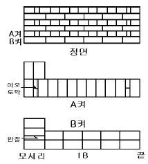
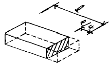

건축일반시공기능장 (2004-07-18 기출문제)
1과목: 임의 구분
1. 건물 배치도에 표시되는 사항이 아닌 것은?
- 각실의 배치와 넓이
- 부지의 고저와 인접도로의 폭
- 정확한 방위표시
- 인접 대지와의 경계
(정답률: 알수없음)

2. 건축 설계도면 중에서 실시설계도만으로 짝지어져 있는 것은?
- 창호도, 전개도, 동선도
- 배치도, 면적도표, 구상도
- 구상도, 골조도, 단면상세도
- 단면상세도, 부분상세도, 전개도
(정답률: 알수없음)
3. 목구조에서 기초 위에 가로놓아 상부에서 오는 하중을 기초에 전달하며, 기둥 밑을 고정하고 벽을 치는 뼈대가 되는 수평재는?
- 층보
- 토대
- 인방
- 동바리
(정답률: 알수없음)
4. 콘크리트의 시공연도(Workability)를 증진시키는 혼화재(제)가 아닌 것은?
- A.E제
- 포졸란
- 플라이애시
- 염화나트륨
(정답률: 알수없음)
5. 네트워크 공정표의 용어와 관계가 없는 것은?
- 대상공사(Project)
- 최초개시시각(EST)
- 전여유(Total float)
- 스페이서(Spacer)
(정답률: 알수없음)
6. 공사 도급방법 중 죠인트 벤쳐(Joint Venture)란?
- 직종별, 공정별 분할도급이다.
- 일식도급이다.
- 공동도급이다.
- 공정별 분할도급이다.
(정답률: 70%)
7. 시멘트액체방수와 비교한 아스팔트방수의 특징에 대한 설명으로 옳지 않은 것은?
- 신뢰성이 높다.
- 시공성이 까다롭다.
- 수리를 할 경우 수리범위가 광대하다.
- 결함부 발견이 용이하다.
(정답률: 알수없음)
8. 저장할 시멘트 수량이 3000포대일 때 쌓는 단수를 12포대로 하면 시멘트 창고의 소요면적은?
- 75m2
- 100m2
- 125m2
- 250m2
(정답률: 알수없음)
9. 그림과 같은 벽돌쌓기는?

- 영국식 쌓기
- 프랑스식 쌓기
- 네델란드식 쌓기
- 미국식 쌓기
(정답률: 알수없음)
10. 벽돌벽 1m2를 두께 1.0B로 쌓기할 때 필요한 벽돌 정미량은? (단, 표준형벽돌 사용)
- 65장
- 75장
- 130장
- 149장
(정답률: 알수없음)
11. 시멘트 모르타르로 콘크리트 바탕의 내벽을 바를 때 초벌 바름 두께의 표준은?
- 4mm
- 5mm
- 6mm
- 7mm
(정답률: 알수없음)
12. 실내를 시멘트 모르타르로 미장바르기 할 때 가장 먼저 공사하는 부분은?
- 천장
- 상부벽
- 하부벽
- 바닥 및 계단
(정답률: 알수없음)
13. 콘크리트 바탕의 바닥 모르타르 바름에서 미장공이 10명 소요된다면 미장인부는 몇 명으로 적산하는가?
- 5명
- 10명
- 15명
- 20명
(정답률: 알수없음)
14. 시멘트 모르타르 1m3를 배합하는데 소요되는 시멘트량은 몇 포 정도인가? (단, 배합비는 1 : 3 이다.)
- 8포
- 10포
- 13포
- 16포
(정답률: 알수없음)
15. 다음 중 바닥용 모자이크 타일의 재질로서 가장 좋은 것은?
- 자기질
- 도기질
- 석기질
- 토기질
(정답률: 알수없음)
16. 내장타일을 붙일 때 줄눈폭 5mm 이하의 치장줄눈 작업시 시멘트 모르타르의 배합비로서 가장 적당한 것은?
- 1 : 1
- 1 : 2
- 1 : 3
- 1 : 4
(정답률: 알수없음)
17. 겨울철의 타일공사시 보온에 의하여 시공부분을 보양하여야 하는 경우는 외기의 기온이 몇℃ 이하일 때인가?
- 0℃
- 2℃
- 5℃
- 10℃
(정답률: 알수없음)
18. 타일은 붙인후 며칠간 보행 및 진동을 금지해야 하는가?
- 3일
- 7일
- 10일
- 13일
(정답률: 60%)
19. 현장배합시 타일붙임용 모르타르에 사용하는 모래로서 적당한 것은? (단, 모자이크타일 붙임은 제외)
- 표준체 0.6mm체에 100% 통과하는 것
- 표준체 1.2mm체에 100% 통과하는 것
- 표준체 2.5mm체에 100% 통과하는 것
- 표준체 5mm체에 100% 통과하는 것
(정답률: 알수없음)
20. 비계다리의 나비는 최소 얼마 이상이어야 하는가?
- 60㎝
- 75㎝
- 90㎝
- 120㎝
(정답률: 알수없음)
2과목: 임의 구분
21. 추락의 위험이 있는 곳은 공사 완료시까지 수직방향 최대 몇m 이내의 간격으로 강관 등을 사용하여 추락방지용 안전난간을 설치하여야 하는가?
- 60cm
- 90cm
- 120cm
- 180cm
(정답률: 알수없음)
22. 시멘트 창고의 바닥높이는 지반에서 최소 얼마 이상으로 하는가?
- 10㎝
- 30㎝
- 45㎝
- 60㎝
(정답률: 알수없음)
23. 공사시방서 작성 시 기재하는 사항과 가장 거리가 먼 것은?
- 공사 명칭
- 공사 범위
- 지정 재료
- 공비 지불조건
(정답률: 알수없음)
24. 내화벽돌 쌓기에 대한 설명 중 틀린 것은?
- 물축임하여 쌓는다.
- 굴뚝의 안쌓기는 구조벽체에서 0.5B정도 떼어 공간을 두고 쌓는다.
- 줄눈의 크기는 가로, 세로 6mm가 표준이다.
- 쌓은 후 비가 맞지 않게 보양해야 한다.
(정답률: 알수없음)
25. 테라조 현장 갈기에 대한 설명 중 옳지 않은 것은?
- 현관바닥은 복판 또는 안쪽에 물이 괼 수 있도록 적당히 물매를 둔다.
- 줄눈대는 정확히 수평으로 튼튼하게 고정하고, 모르타르는 불필요한 부분을 잘라낸다.
- 배합은 정확히 하고, 부착, 경화, 마모 등에 안전한 배합으로 한다.
- 밑바름 모르타르나 종석반죽은 된비빔으로 한다.
(정답률: 알수없음)
26. 대형벽돌형 외부타일의 줄눈나비 표준으로 옳은 것은?
- 12 mm
- 9 mm
- 6 mm
- 3 mm
(정답률: 알수없음)
27. 벽체에 개량압착붙이기 타일 공사시 바탕면의 붙임 모르타르의 1회 바름면적은 얼마 이하로 하는가?
- 1.0m2
- 1.2m2
- 1.5m2
- 2.0m2
(정답률: 알수없음)
28. 통나무 비계의 결속재로 사용되는 철선으로 가장 적당한 것은?
- #4 ∼ 6 철선
- #6 ∼ 8 철선
- #8 ∼ 10 철선
- #10 ∼ 12 철선
(정답률: 알수없음)
29. 콘크리트 부어넣기에 대한 설명 중 잘못된 것은?
- 플로어 호퍼(floor hopper)에서 먼 곳부터 가까운 곳으로 부어넣는다.
- 철근이 변형 이동되지 않도록 한다.
- 부어넣기 중의 이어붓기 시간 간격은 외기온이 25℃미만일 때는 150분으로 한다.
- 기둥은 콘크리트가 일체가 되도록 높이에 상관없이 한번에 부어넣는다.
(정답률: 80%)
30. 인조석 정벌바르기에서 시멘트와 종석의 표준용적배합비는?
- 1 : 1.5
- 1 : 2
- 1 : 3
- 1 : 4
(정답률: 알수없음)
31. 경량콘크리트에 대한 설명이다. 옳지 않은 것은?
- 일반적으로 기건단위용적중량이 4.5 이하의 것을 말한다.
- 자중이 작아서 건물 중량이 경감된다.
- 내화성이 크고 열전도율이 적으며 방음효과가 크다.
- 시공이 번거롭고 재료처리가 필요하다.
(정답률: 알수없음)
32. 강관비계에 대한 설명이 잘못된 것은?
- 가새는 수평간격을 약 21m 내외, 각도 30° 로 한다.
- 띠장 간격은 1.5m 이내로 한다.
- 비계장선의 간격은 1.5m 이내로 한다.
- 비계기둥의 최고부에서 31m 까지의 밑부분은 2본의 강관으로 묶어 세운다.
(정답률: 알수없음)
33. 건축물을 도면으로 표현하기 위해 사용하는 척도에 대한 설명이다, 옳지 않은 것은?
- 도면의 척도에는 배척, 실척, 축척의 3종류가 있다.
- 척도의 정확한 사용 능력은 도면을 작성할 때에 반드시 필요하다.
- 도면의 축척은 그 도면에 요구되는 내용의 정도에 적합한 것을 택해야 한다.
- 건축제도에서는 일반적으로 배척과 실척이 주로 사용된다.
(정답률: 알수없음)
34. 가는실선의 용도가 아닌 것은?
- 치수선
- 경계선
- 인출선
- 해칭선
(정답률: 알수없음)
35. 건축도면에서 가장 굵은 실선을 사용하는 부분은?
- 단면선
- 물체의 외형선
- 상상선
- 절단선
(정답률: 알수없음)
36. 벽돌의 1일 쌓기 높이는 최대 얼마 이하로 하는가?
- 1.5m
- 2m
- 2.5m
- 3m
(정답률: 알수없음)
37. 벽돌조인 경우 내력벽의 최소 두께는 벽높이의 얼마 이상으로 하는가?
- 1/12
- 1/15
- 1/16
- 1/20
(정답률: 알수없음)
38. 합성수지도료의 일반적인 특징에 대한 설명으로 옳지 않은 것은?
- 건조시간이 빠르고 도막도 단단하다.
- 내산성은 있으나 내알칼리성이 없어서 콘크리트나 플라스터 면에 바를 수 없다.
- 도막은 페인트와 바니스보다도 더욱 방화성이 있다.
- 투명한 합성수지를 사용하면 극히 선명한 색을 낼 수있다.
(정답률: 알수없음)
39. 다음 중 열가소성수지는?
- 염화비닐수지
- 요소수지
- 페놀수지
- 에폭시수지
(정답률: 80%)
40. 비철금속에 대한 설명으로 옳지 않은 것은?
- 동은 화장실 주위와 같이 암모니아가 있는 장소에서는 빨리 부식하기 때문에 주의해야 한다.
- 황동은 주조 및 가공이 모두 용이하며 내구성도 크고 외관이 아름답다.
- 청동은 동에 아연을 합금시킨 것이며 보통 쓰이는 청동은 아연 함유량이 40% 이하이다.
- 알루미늄은 콘크리트에 접하거나 흙중에 매몰된 경우에는 부식되기 쉽다.
(정답률: 알수없음)
3과목: 임의 구분
41. 점토의 물리적 성질에 대한 설명으로 옳지 않은 것은?
- 입도는 보통 2㎛이하의 미립자이나 모래알 정도의 조립을 포함한 것도 있다.
- 일반적으로 인장강도는 3 ∼10 kg/cm2이고 압축강도는 인장강도의 약 5배 정도이다.
- 점토 입자가 미세할수록 가소성이 좋다.
- 건조수축은 점토의 조직에 관계하지만, 가하는 수량과는 무관하다.
(정답률: 알수없음)
42. 단순조적블록 공사에서 블록의 하루 쌓기 높이는 최고 얼마 이하로 하는가?
- 2.1m
- 1.8m
- 1.5m
- 1.2m
(정답률: 알수없음)
43. 기본형 190x190x390mm 콘크리트블록을 사용하여 벽체를 공사할 때 적당한 소요블록수는?(단, 벽높이 3.6m, 벽길이 20m, 벽두께 190mm, 줄눈나비 10mm, 할증률 4%)
- 936 장
- 974 장
- 1224 장
- 1273 장
(정답률: 알수없음)
44. 그림과 같이 온장의 벽돌을 마름질한 벽돌 명칭은 무엇인가?(실선부분)

- 반반절
- 이오토막
- 칠오토막
- 반절
(정답률: 알수없음)
45. 벽돌쌓기에서 한 켜는 길이쌓기로 하고 다음 켜는 마구리 쌓기로 하며 모서리에는 칠오토막이 사용되는 벽돌 쌓기법은?
- 영국식쌓기
- 미국식쌓기
- 화란식쌓기
- 프랑스식쌓기
(정답률: 알수없음)
46. 창문틀 주위에 벽돌을 쌓을 때 문틀에 꺽쇠나 큰못을 박아 벽돌에 고정시켜야 하는데 이때 고정시키는 간격은 어느 정도가 적당한가?
- 20㎝
- 40㎝
- 60㎝
- 80㎝
(정답률: 알수없음)
47. 시멘트의 압축강도란 배합후 며칠이 경과한 후의 강도인가?
- 7일
- 14일
- 21일
- 28일
(정답률: 알수없음)
48. 아치의 종류 중 아치벽돌을 특별히 주문 제작하여 쓴 것을 무엇이라 하는가?
- 막만든아치
- 본아치
- 거친아치
- 층두리아치
(정답률: 알수없음)
49. 미장공사에 대한 설명 중 틀린 것은?
- 회반죽 바름시에 실내온도가 2℃ 이하일 때에는 공사를 중단한다.
- 석고 플라스터 바름 작업 중에는 될 수 있는 대로 통풍을 방지하도록 한다.
- 인조석 바름에서 콘크리트 바탕은 초벌 바름 모르타르로 수평을 처리하고, 긁은 후 방치기간은 1주 이상 넘으면 안된다.
- 천장이나 차양의 모르타르바름 마무리 두께는 15 mm 이하로 한다.
(정답률: 알수없음)
50. 인조석 정벌바름시 바름두께의 표준은?
- 7.5mm
- 12mm
- 15mm
- 24mm
(정답률: 알수없음)
51. 콘크리트 바닥에 시멘트 모르타르로 정벌바름을 할때 표준 용적배합비는? (시멘트:모래)
- 1:1
- 1:2
- 1:3
- 1:5
(정답률: 80%)
52. 타일에 백화를 방지하기 위한 방법으로 옳지 않은 것은?
- 압착 붙이기를 원칙으로 한다.
- 바탕모르타르바르기 두께는 너무 두껍지 않게 바른다
- 걸침 시멘트를 많이 사용하는 것이 좋다.
- 타일 뒷면 모르타르는 골고루 충분히 채운다.
(정답률: 알수없음)
53. 재해를 예방하기 위한 하아비(Harvery.J.H)의 시정책(3E)이 아닌 것은?
- 처벌규정 강화
- 교육 및 훈련
- 감독의 실시
- 시설과 장비의 결함개선
(정답률: 알수없음)
54. 조적조에서 개구부간의 수직거리는 최소 얼마 이상 띄어야 하는가?
- 40㎝
- 60㎝
- 90㎝
- 120㎝
(정답률: 알수없음)
55. 철근콘크리트 공사 중 거푸집 측압에 관한 사항 중 옳지 않은 것은?
- 온도가 높을수록 측압이 크다.
- 시공연도가 클수록 측압이 크다.
- 다지기가 충분할수록 측압이 크다.
- 붓기의 속도가 빠를수록 측압이 크다.
(정답률: 알수없음)
56. 벽돌벽 내쌓기에 대한 설명 중 틀린 것은?
- 보통 한 켜씩 내쌓을 경우 1/8B씩 내쌓는다.
- 보통 두 켜씩 내쌓을 경우 1/4B씩 내쌓는다.
- 내쌓기는 마구리 쌓기로 하는 것이 좋다.
- 내쌓기의 내미는 정도의 한도는 3.0B로 한다.
(정답률: 알수없음)
57. 철근 콘크리트보의 늑근에 대한 설명으로 틀린 것은?
- 압축력에 대한 보강을 위해 배치한다.
- 단순보일 경우 양단부에 많이 배치한다.
- 굽힌철근의 유무에 관계없이 배치한다.
- 계산상 필요없을 때라도 사용한다.
(정답률: 알수없음)
58. 조립구조의 특징 중 옳은 것은?
- 현장작업 공정이 축소된다.
- 부재의 접합부에서 구조적인 문제는 없다.
- 생산된 부재는 정밀도가 부족하다.
- 대량생산은 불가능하다.
(정답률: 알수없음)
59. 철근콘크리트조의 철근과 콘크리트의 부착력에 관한 설명으로 옳은 것은?
- 압축강도가 큰 콘크리트일수록 작아진다.
- 철근의 주장(周長)에 비례한다.
- 정착길이를 크게 증가하면 비례감소한다.
- 철근의 표면 상태나 단면 모양과는 관계없다.
(정답률: 90%)
60. 일반적인 콘크리트를 부어넣기의 순서로 옳은 것은?
- 기둥→ 계단→ 보→ 바닥판
- 기둥→ 계단→ 벽→ 바닥판
- 기둥→ 보→ 계단→ 바닥판
- 기둥→ 보→ 벽 → 바닥판
(정답률: 알수없음)